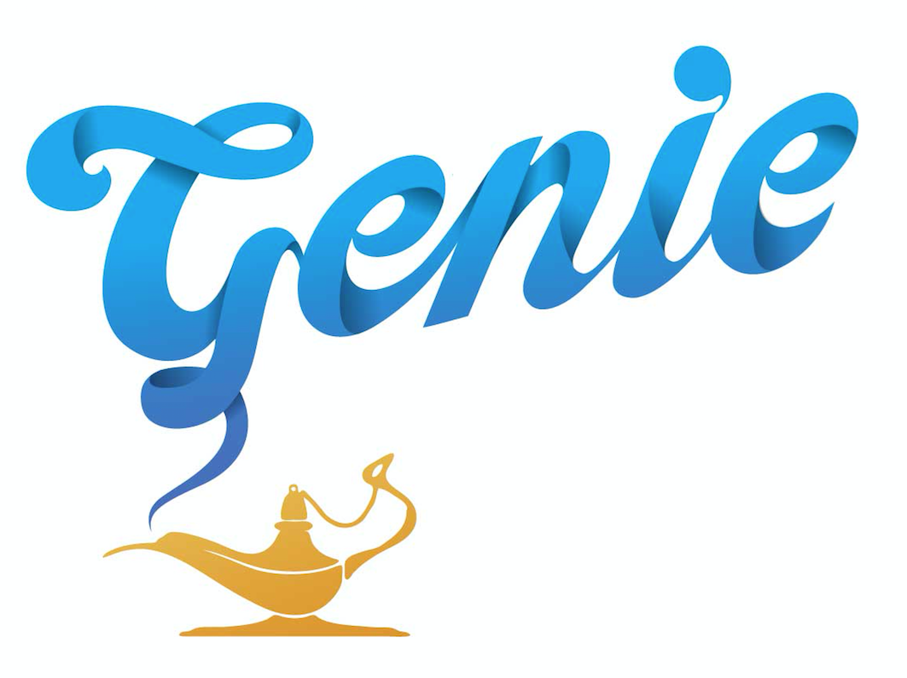
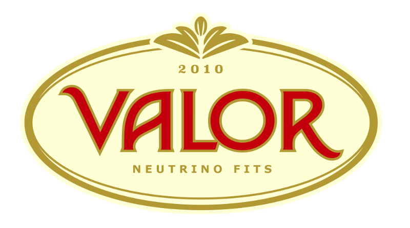
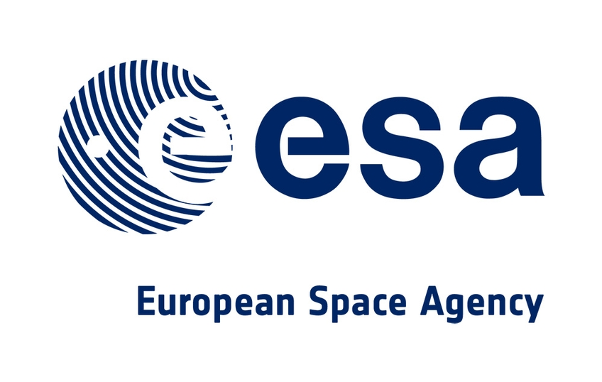

Neutrino experiment exploitation
I serve as a member of the SBND Executive Committee (2020-present), SBND Physics co-Coordinator (2017-present), and as Systematics & Oscillation Sensitivity WG co-Coordinator (2018-present) for the overall SBN programme. I lead the development of a simultaneous sterile neutrino oscillation and systematics constraint fit for SBN, as well as preparations for SBND neutrino cross-section measurements of unprecedented precision. I also have a keen interest on Machine Learning, and my group prototypes novel Deep Learning methods for LArTPC neutrino event reconstruction.
I am founder and coordinator of the VALOR fitting group which, from 2010 to present, has produced over 20 reviewed oscillation physics analyses and it has contributed to 12 published T2K papers, culminating in the 2020 Nature paper. Details of the T2K outputs of the VALOR group (codes, technical notes, papers) can be found here).
Neutrino interaction phenomenology

I am one of the main authors of
GENIE,
and co-spokesperson of the international GENIE collaboration,
providing a very well known neutrino-nucleus event generator,
associated charged lepton-nucleus and hadron-nucleus event generators,
several BSM event generators, large curated archives of relevant neutrino,
electron and hadron scattering data and corresponding data/MC comparison tools,
as well as a global analysis of neutrino scattering data informing GENIE tunes.
GENIE performs crucial phemomenology research in the boundary between nuclear
and particle physics, and it provides a bridge between theory and measurement.
As such, it plays a crucial role throughout the lifecycle of every experiment.
I also serve as the Systematics & Tuning WG Coordinator and my effort is focussed on further developments of the leading GENIE global analysis of neutrino scattering data and the production of improved physics tunes. A particular focal area is a global meta-analysis of all SBN measurements of neutrino interaction characteristics, aiming to produce an Argon tune for the early DUNE physics exploitation programme.
I also serve as the Systematics & Tuning WG Coordinator and my effort is focussed on further developments of the leading GENIE global analysis of neutrino scattering data and the production of improved physics tunes. A particular focal area is a global meta-analysis of all SBN measurements of neutrino interaction characteristics, aiming to produce an Argon tune for the early DUNE physics exploitation programme.
Data analysis software

I am one of the founders, main authors and coordinator of the
VALOR fitting group.
The group plays a central role both in the physics exploitation and design optimisation several experiments,
by developing the VALOR Software Development Kit (SDK),
and by implemented numerous data analyses and sensitivity studies on top of that SDK.
Applications

My group collaborates with GMV Innovating Solutions,
a large technology company headquartered in Spain with a UK subsidiary in the Harwell Oxford campus near RAL,
on a preliminary exploration of the innovative and disrupting technological concept of Positioning, Navigation
and Timing (PNT) applications based on neutrinos.
This work is aimed at applications where the Global Navigation Satellite System (GNSS) can not work, such as
i) submarine navigation, ii) navigation in the Earth poles, where no GNSS satellites are in view,
iii) indoor positioning for big machines, for example for tunnels construction, or iv) mining applications.
This work is funded by the European Space Agency (ESA).